routers目录下创建indexController.js,models目录下创建indexModel.js。实现加载其它的controller路由
//indexController.js
import IndexModels from "../models/indexModel";
const indexController = {
constructor(){
}
indexAction(){
return async(ctx,next)=>{
const indexmodel = new IndexModels();
const result = await indexmodel.getData();
ctx.body = await ctx.render("index",{data:result});
}
}
}
export default indexController;
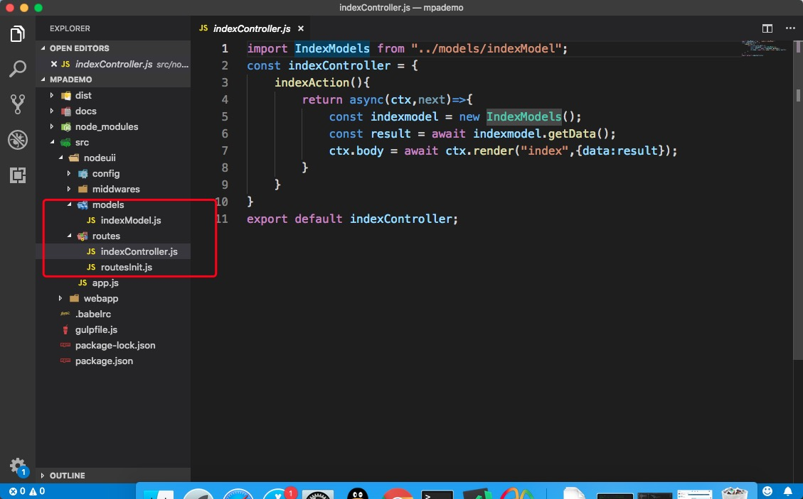
//indexModel.js
/**
* IndexModel模块
* @author 190598130@qq.com
*/
/**
* IndexModel类，生成一段异步的数据
* @class
*/
export default class IndexModel{
/**
* @constructor
* @param {sting} app koa2的上下文环境
*/
constructor(app){
this.app = app;
}
/**
* 获取具体的api的接口数据
* @return {Promise} 返回的异步处理结果
* @example
* return new Promise
* getData()
*/
getData(){
return new Promise((resolve,reiect)=>{
setTimeout(()=>{
resolve("Hello IndexAction");
},1000);
});
}
}
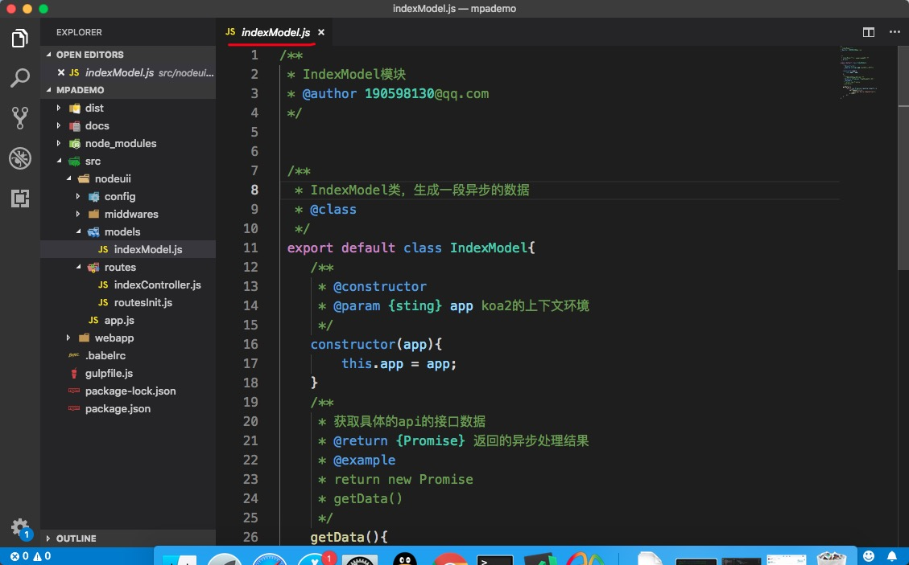
import indexController from "./indexController";
const routesInit = {
init(app,router){
app.use(router(_ => {
console.log("--------",indexController.indexAction());
_.get('/', indexController.indexAction())
}));
}
}
export default routesInit;
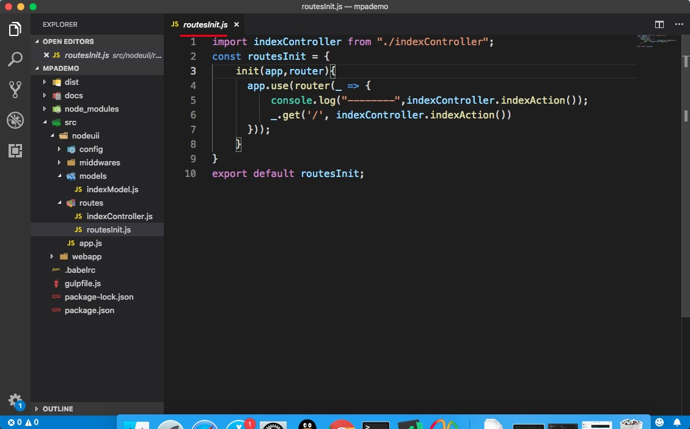 2. 可以看到我们在indexModel.js中写了文档注释，因为我们要生成开发文档。 3. 安装npm 包：jsdoc ，并在package.json中添加配置
npm install jsdoc --save
------------------------
//package.json配置
"docs":"jsdoc ./src/nodeuii/**/*.js -d ./docs/jsdocs"
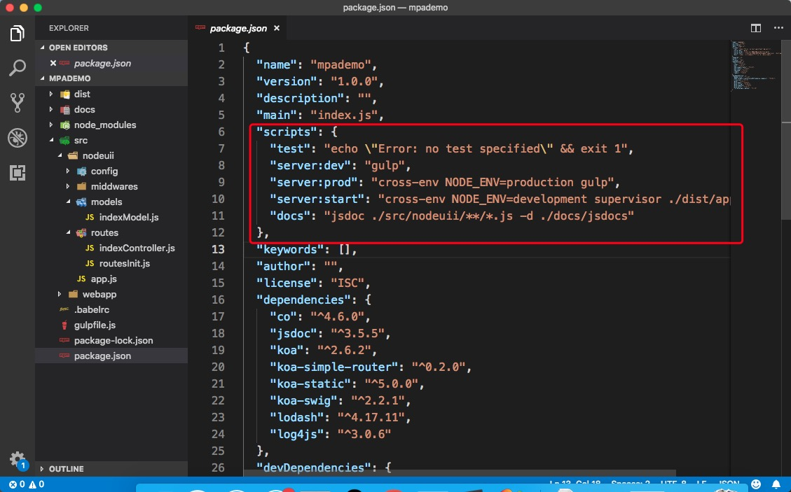 4. 在项目根目录下创建docs文件夹，打开终端执行docs命令，生成doc文档。将文档在浏览器中打开就可以看到生成的文档。 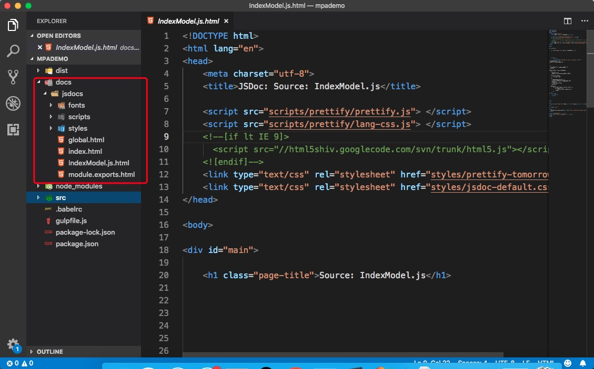 5. 溶入html和css，由于我们还没有写webapp，所以先手动的在dist目录中创建views和assets目录，views目录下创建index.html页面，assets目录下创建index.css文件。
//index.html
<!DOCTYPE html>
<html lang="en">
<head>
<meta charset="UTF-8">
<meta name="viewport" content="width=device-width, initial-scale=1.0">
<meta http-equiv="X-UA-Compatible" content="ie=edge">
<title>Document</title>
<link rel="stylesheet" href="/index.css">
</head>
<body>
<h1>{{data}}</h1>
</body>
</html>
-------------------------------------
//index.css
body{
background:pink;
}
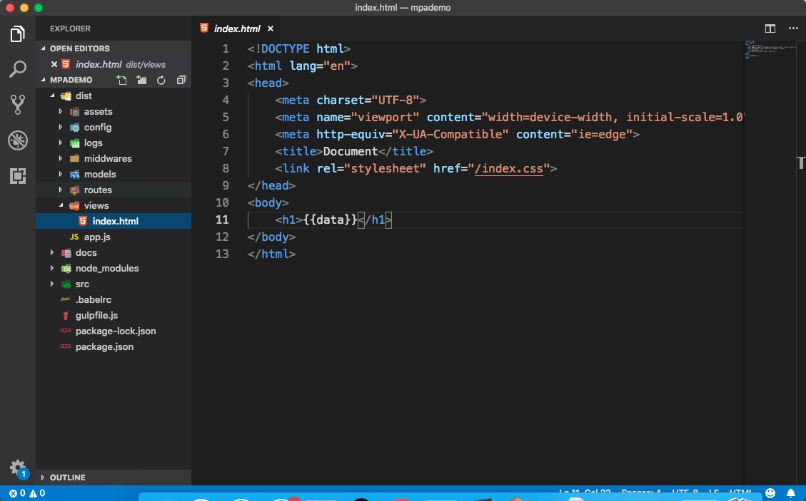 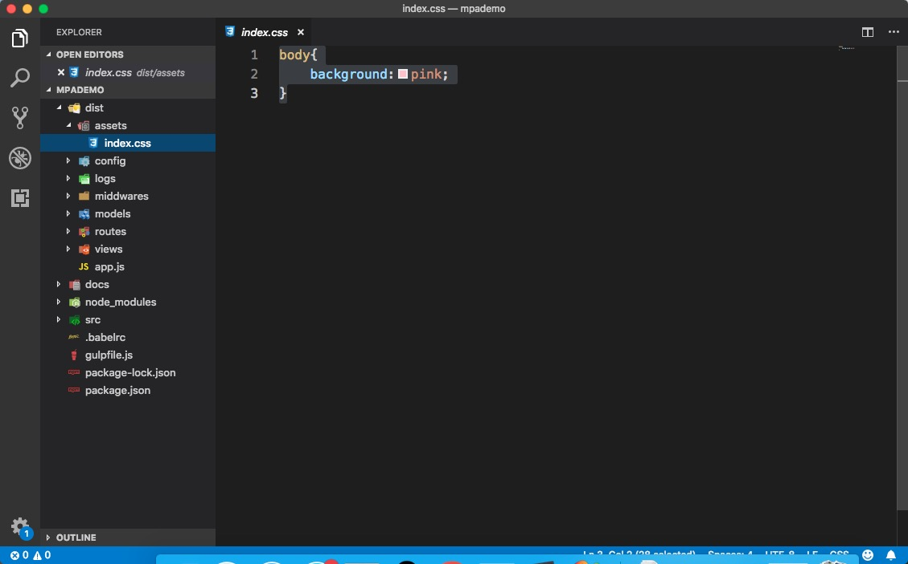 6. 安装koa-swig、co和koa-static。
npm install koa-swig --save
npm install koa-static --save
npm install co --save
7 在app.js中使用koa-swig、co和koa-static
//app.js
import Koa from "koa";
import config from "./config";
import routesInit from "./routes/routesInit.js"
import router from 'koa-simple-router'
import errorHandler from './middwares/errorHandler';
import log4js from 'log4js';
import serve from "koa-static";
import render from "koa-swig";
import co from "co";
log4js.configure({
appenders: { cheese: { type: 'file', filename: __dirname+'/logs/mylogs.log' } },
categories: { default: { appenders: ['cheese'], level: 'error' } }
});
const logger = log4js.getLogger('cheese');
const app = new Koa();
app.context.render = co.wrap(render({
root: config.viewDir,
autoescape: true,
cache: 'memory', // disable, set to false
ext: 'html',
writeBody: false
}));
routesInit.init(app,router);
errorHandler.error(app,logger);
app.use(serve(config.staticDir));
app.listen(config.port,()=>{
console.log(`监听的端口是：${config.port}`);
});
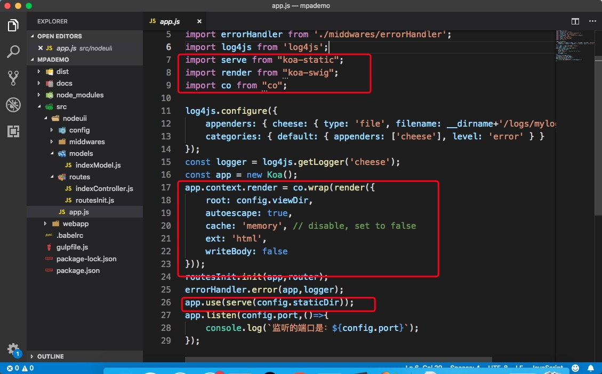 8. 在config/index.js中编写staticDir和viewDir
import {extend} from "lodash";
import {join} from "path";
let config = {
env: process.env.NODE_ENV,
staticDir:join(__dirname,"..","assets"),
viewDir:join(__dirname,"..","views")
}
if(false){
console.log(123);
}
if (process.env.NODE_ENV == "development") {
const localConfig = {
port: 8081
}
config = extend(config, localConfig);
}
if (process.env.NODE_ENV == "production") {
const prodConfig = {
port: 80
}
config = extend(config, prodConfig);
}
export default config;
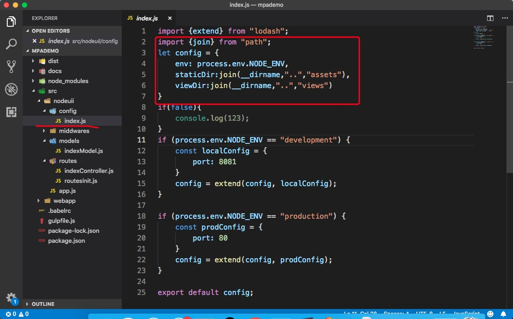 9. 这时候打开两个窗口，一个执行npm run server:dev另一个执行npm run server:start，就可以运行我们的代码，打开浏览器，输入localhost:8081就可以看见html和css已经显示到上。 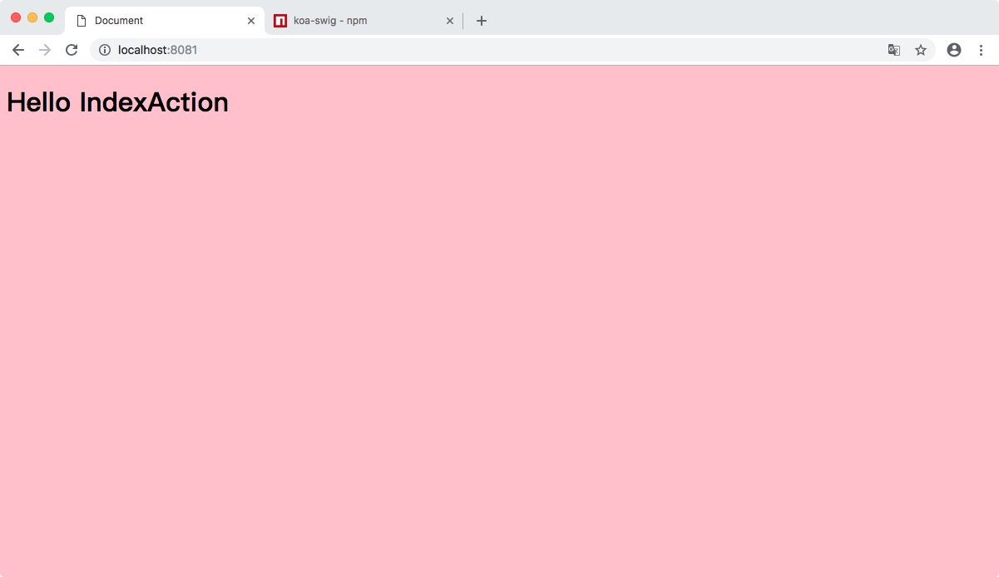 10. 处理node的错误，安装gulp-eslint。
npm install gulp-eslint --save-dev
11 在gulpfile.js中添加task
const eslint = require('gulp-eslint');
//lint网站错误处理
gulp.task("lint", () => {
gulp.src('./src/nodeuii/**/*.js')
.pipe(eslint())
.pipe(eslint.format())
.pipe(eslint.failAfterError());
});
if (process.env.NODE_ENV == "lint") {
_task = ["lint"];
}
12 项目根目录下创建eslint的配置文件.eslintrc.js和.eslintignore
//.eslintrc.js
module.exports = {
"env":{
"node":true,
"es6":true,
"browser":true
},
"globals":{
"$":false
},
"extends": "eslint:recommended",
"parserOptions": {
"ecmaVersion": 6,
"sourceType": "module"
}
}
//.eslintignore
tests/**/*.js
dist/**/*.js
//package.json
"scripts": {
"test": "echo \"Error: no test specified\" && exit 1",
"server:dev": "gulp",
"server:lint": "cross-env NODE_ENV=lint gulp",
"server:prod": "cross-env NODE_ENV=production gulp",
"server:start": "cross-env NODE_ENV=development supervisor ./dist/app.js",
"docs": "jsdoc ./src/nodeuii/**/*.js -d ./docs/jsdocs"
},
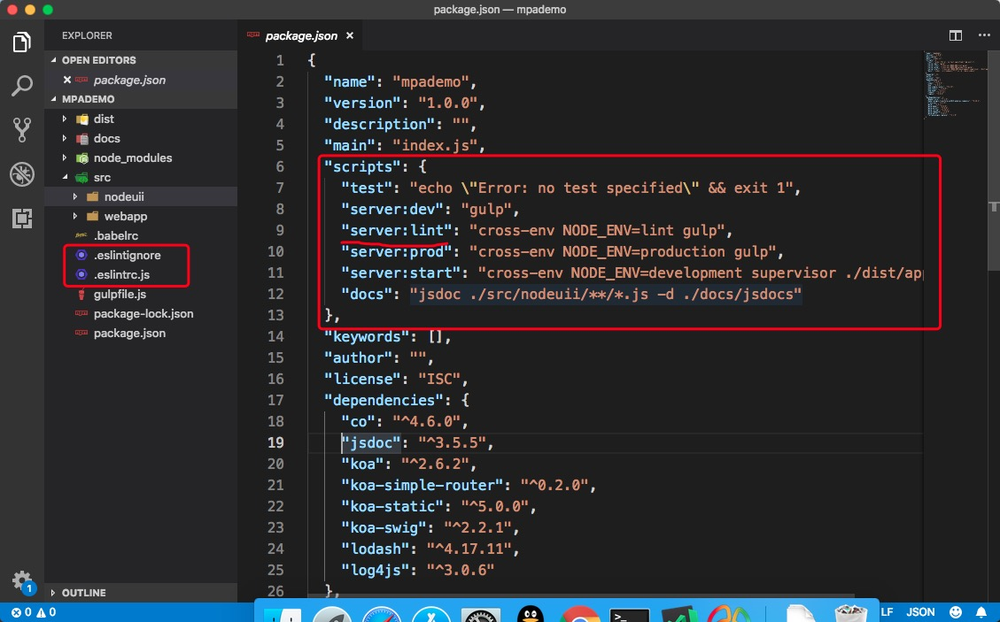 13. 接下来在终端执行npm run server:lint就可以看到lint已经将我们代码中的错误列了出来。 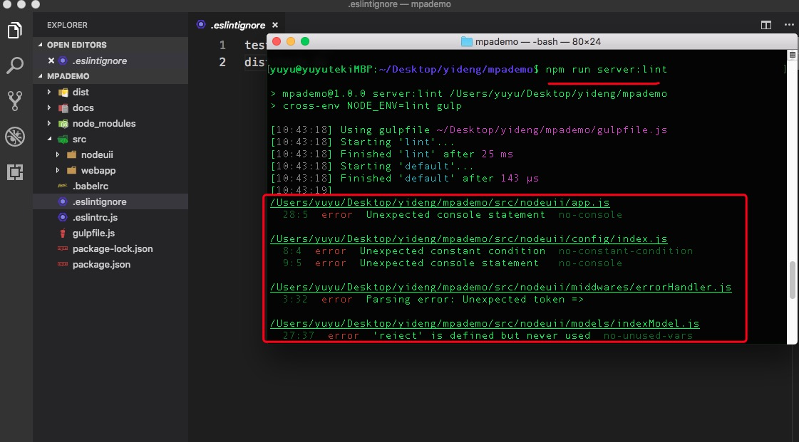 14. 到此我们写在nodeuii里面的后台node代码就可以算是完成了。接下来我们要写webapp前端代码，并将前端手写在dist里面的html和css通过webpack自动打包到dist目录里。 15. 在webapp目录下创建views和components目录，views目录里存放页面的代码模板，components里面存放组成页面的组件。 16. 在components目录下创建common、ydfooter、ydheader三个文件夹。我们就可以在这些目录里面编写自己的页面小组件，如：在ydfooter里面插入小组件只需要在ydfooter目录下创建index.html、ydfooter.css和ydfooter.js就可以了。 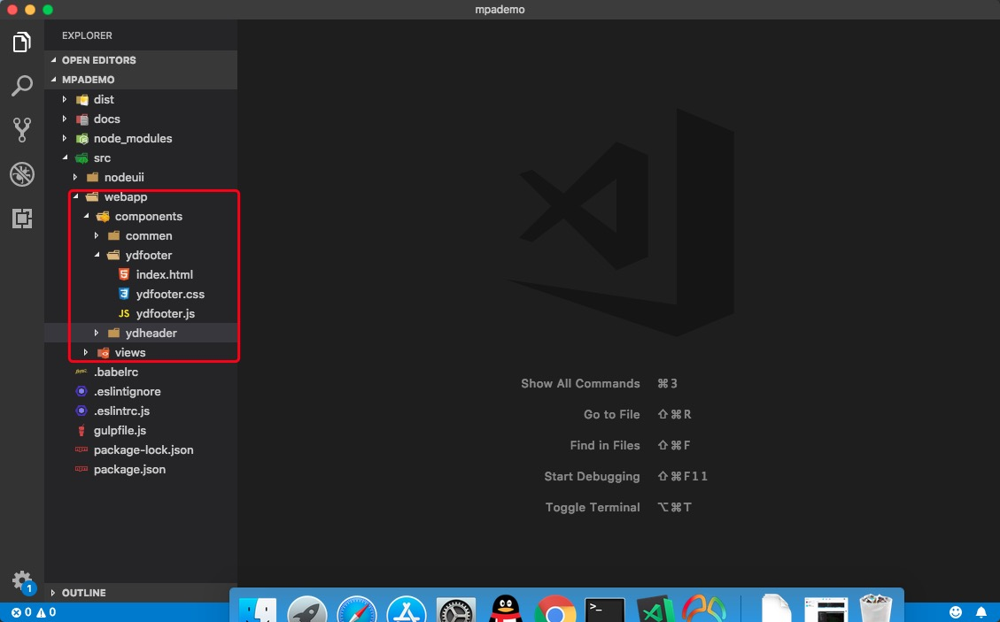 17. 在views目录下创建common和index目录，在common目录下创建layout.html。在index目录下创建test.entry.js和test.html
//layout.html
<!doctype html>
<html>
<head>
<meta charset="utf-8">
<title>{% block title %}{% endblock %}</title>
{% block head %}
{% endblock %}
</head>
<body>
{% block content %}{% endblock %}
{% block scripts %}
{% endblock %}
</body>
</html>
//test.entry.js
import ydfooter from "../../components/ydfooter/ydfooter.js";
ydfooter.init();
//test.html
{% extends 'common:layout.html' %}
{% block title %}京程一灯多页系统{% endblock %}
{% block head %}
<!--injectcss-->
{% endblock %}
{% block content %}
{% include "../../components/ydfooter/index.html" %}
{% endblock %}
{% block scripts %}
<!--injectjs-->
{% endblock %}
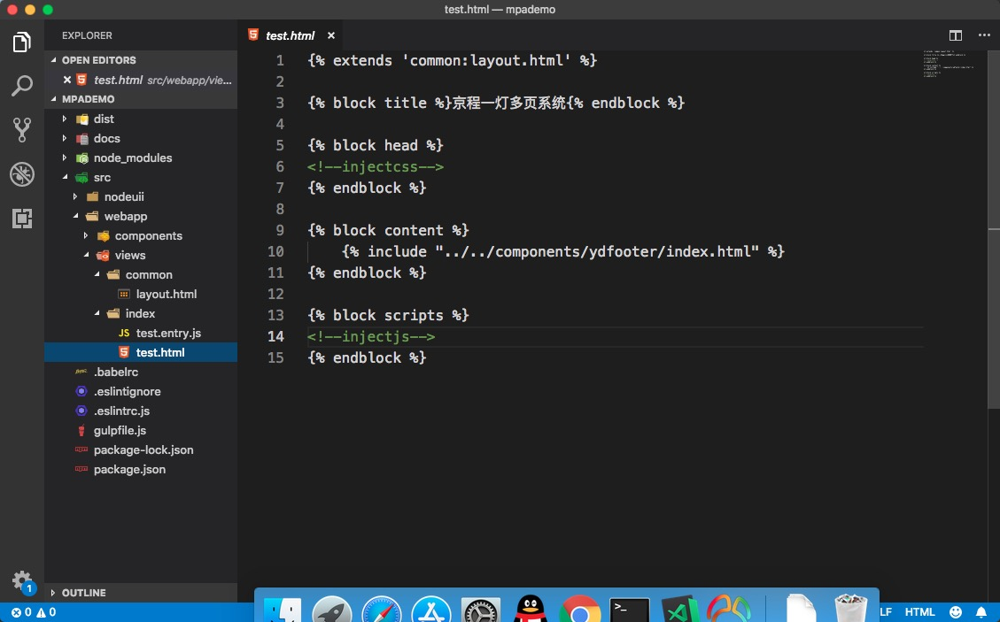